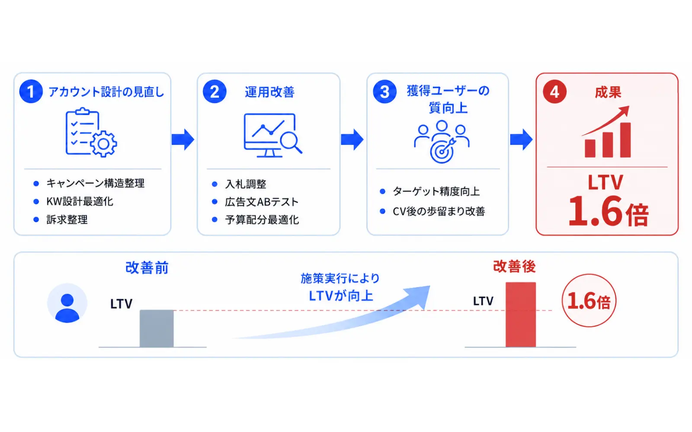

この記事でわかること
- 広告アカウント診断を、計測→費用の流れ→構成→LPの順で進める手順
- 自社で見る10項目と、それぞれの「危険サイン」「次の一手」を1枚にした表
- 診断の前に揃える3つ（権限・期間・数字）
- 診断結果を「戻せるか」で並べ替え、触る順番を決める方法
- 自社で見るか、外部の無料診断に頼むかの分かれ目と、頼む前の確認点
広告アカウント診断は「悪い数字探し」ではなく「直す順番」を決める作業
広告の成果が思わしくないとき、まず見るのはCPAやクリック率の数字になりがちです。ただ、数字の悪い場所を並べても、どこから手を付けるかは決まりません。診断の目的は悪い数字を探すことではなく、「何を先に直せば、ほかの数字が正しく読めるようになるか」の順番を決めることです。
当社が実務で広告アカウントを見るときの順番は、次の4段階です。上から順に見る理由は、下の段階の数字は、上の段階が正しくないと信用できないからです。たとえばコンバージョンの数え方が違っていれば、CPAを比べても意味がありません。
- 計測：何を成果として数えているか、その数は実態と合っているか（項目1〜3）
- 費用の流れ：どの検索語句・配信先・時間帯に費用が使われているか（項目4〜6）
- 予算と構成：成果の出る場所に配分されているか、分け方は適切か（項目7〜8）
- 広告とLP・フォーム：広告で約束したことが、遷移先で続いているか（項目9〜10）
この記事は、この4段階に沿った10項目を自社で確認する手順です。運用を代理店に任せている場合の見方は広告代理店の提案書とレポートはここを見る｜任せて大丈夫か見極める7つのサイン、成果が悪い原因を数字から探す方法はCPAが高い原因｜広告改善で見るべきポイントで扱っています。
診断の前に揃える3つ
数字を見始める前に、次の3つを決めておくと、診断のやり直しが減ります。
- 権限：広告アカウントの管理者が誰か、自社名義かを確認します。診断だけなら、閲覧権限で足りる場合がほとんどです。管理者権限を外部に渡す必要はありません。アカウントの名義と引き継ぎの考え方は広告アカウントの所有権｜引き継ぎ手順と失う資産にまとめています。
- 期間：直近30日だけでなく、前の30日、できれば同じ時期の前年も並べます。季節性のある商材では、直近だけを見ると判断を誤ります。成果が出るまでに時間のかかる商材は、90日で見ます。
- 事業の数字：広告の管理画面の外にある数字を1枚に集めます。問い合わせ数、商談化した数、受注数と受注単価、許容できる獲得単価です。ここが空欄のままだと、CPAが良いか悪いかを判断できません。許容単価の決め方は広告のKPIの決め方｜事業の制約条件から逆算するを参考にしてください。
【1〜3】計測：何を成果として数えているか
最初に確認するのは計測です。ここがずれていると、以降の数字はすべて読み違えます。
主なコンバージョンが「事業の成果」になっているか
ボタンのクリックや、フォームページの表示を成果にしていないかを見ます。問い合わせフォームなら送信完了、予約なら予約確定、電話なら通話の発生まで進んだ地点が目安です。成果の地点が手前にあるほど、CPAは良く見えますが、売上とは結びつきません。
- 主なコンバージョンの名前と、数えている地点を書き出す
- 補助的な指標（閲覧・クリックなど）が、入札の目標に使われていないか確認する
同じ成果が二重に数えられていないか
タグが複数の場所で発火していたり、サンクスページを再読み込みするたびに数えていたりすると、成果が実際より多く出ます。管理画面のCV数が、実際の問い合わせ件数より常に多い場合は、まずここを疑います。
- テスト送信を1件行い、管理画面で何件増えるかを確かめる
管理画面の数と、実数が合っているか
広告の管理画面のCV数と、GA4、さらに自社の問い合わせ管理（CRMやメール、予約システム）の実数を、同じ期間で並べます。多少のずれは出ますが、常に大きく離れているなら、計測を直すのが最優先です。原因の探し方は広告管理画面とCRMのCV数が合わない原因と対処法とGA4でコンバージョン計測できない原因と確認ポイント｜GTM設定トラブル対処法で解説しています。
なお、自動入札を使っているのに月のCVが1桁というアカウントは、入札の判断材料が足りていない可能性があります。その場合の考え方はマイクロコンバージョン設計と自動入札｜CVが月10件の広告アカウントで扱っています。
【4〜6】費用：どの検索語句・配信先に流れているか
計測が信頼できる状態になったら、次は費用の行き先です。成果につながっていない場所に費用が流れていないかを見ます。
4．検索語句に無関係な語が混ざっていないか
検索広告では、実際に広告が表示された検索語句を確認できます。Google広告の検索語句レポートでは、広告の表示やクリックにつながった検索語句のほか、その語句に対応したキーワードやマッチタイプも見られます。事業と関連性の低い語句は、除外キーワードとして登録することで、無関係なユーザーへの表示を避けられます。（出典：検索語句レポートについて - Google 広告 ヘルプ｜Google）
見るのは、費用が多いのに成果がゼロの語句です。たとえば、月の広告費が30万円のアカウントで、成果ゼロの検索語句に6万円が使われていたとします（数字は仮の例です）。費用の2割にあたり、除外設定を整えるだけで、同じ予算をほかの語句に回せます。当社が実務で見ている目安として、成果ゼロの検索語句への費用が全体の2割を超えていれば、除外設定の見直しを優先します。除外の種類と優先順位はGoogle広告の除外設定｜5種類の優先順位と手順に整理しています。
5．自社名・指名検索の費用がどれだけを占めるか
自社名で検索した人は、広告がなくても自社のサイトに来る可能性が高い層です。指名検索の費用が全体の大半を占めていて、新規の見込み客を獲得できていないのに「CPAが良い」と見えていることがあります。指名と一般名詞は分けて数字を見ます。
6．配信先・デバイス・地域・時間帯に偏りがないか
パソコンとスマートフォン、地域、曜日や時間帯で、CPAに大きな差がないかを確認します。店舗型のビジネスで商圏外に配信されていたり、営業時間外の電話が多く取りこぼしになっていたりすると、費用が成果につながりません。差が大きい場合は、入札の調整や配信の絞り込みで対応します。
【7〜8】予算と構成：偏りと分け方
7．予算の配分と、予算制限の有無
成果の出ているキャンペーンが予算の上限で止まり、成果の出ていないキャンペーンが予算を使い切っていないかを見ます。「費用の割合」と「成果の割合」を、キャンペーン単位で並べるのが簡単です。費用の割合が成果の割合を大きく上回るキャンペーンは、配分の見直し候補になります。
8．キャンペーンと広告グループの分け方
目的や検討の度合いが違うキーワードが、同じキャンペーンや広告グループに混ざっていないかを見ます。指名と一般名詞、購入に近い語句と情報収集の語句は、成果の出方が違うため、分けたほうが入札も広告文も合わせやすくなります。分け方をマッチタイプではなく期待LTVで組み替える考え方は広告グループはマッチタイプで分けて終わりか？期待LTVで再編成する設計手順で詳しく扱いました。
Metaなどのソーシャル広告では、広告セットの分け方や、学習期間中に設定を触りすぎていないかが論点になります。学習期間の考え方はMeta広告の学習期間｜安定までの目安と触らない設定を参照してください。
【9〜10】広告とLP・フォームの一致
9．広告の訴求と、LPの見出しが一致しているか
広告で「無料で相談できる」と言っているのに、LPの最初の画面にそれが書かれていなければ、離脱が増えます。検索語句、広告文、LPの最初の見出しの3つを並べて、同じことを言っているかを確認します。LPの最初の画面の見直しはLPのファーストビュー離脱の原因と改善手順が参考になります。
10．フォームと、送信後の対応
クリックされているのに問い合わせが増えない場合は、フォームの入力項目、スマートフォンでの入力しやすさ、送信後の最初の返信の速さを見ます。ここは広告の管理画面からは見えないため、広告の数字が良くても成果が出ない原因として見落とされやすい部分です。原因の切り分けは広告はクリックされるのに問い合わせが増えない原因とは？にまとめています。
10項目を1枚にまとめる
ここまでの10項目を、見る場所・危険サイン・次の一手に整理しました。診断のたびにこの表を埋めていくと、前回との変化も追えます。
| # | 項目 | 見る場所 | 危険サイン | 次の一手 |
|---|---|---|---|---|
| 1 | 成果の定義 | コンバージョンの設定 | クリックや閲覧が成果になっている | 送信完了など事業の成果に置き換える |
| 2 | 二重計測 | テスト送信の結果 | 1件の送信で2件以上増える | タグの発火条件を見直す |
| 3 | 実数との差 | 管理画面・GA4・問い合わせ管理 | 常に大きく離れている | 差の原因を切り分けてから他を触る |
| 4 | 検索語句 | 検索語句レポート | 成果ゼロの語句に費用が集中 | 除外キーワードを追加する |
| 5 | 指名検索の割合 | キーワード別の費用 | 指名が費用の大半を占める | 指名と一般名詞を分けて評価する |
| 6 | 配信先の偏り | デバイス・地域・時間帯別 | 区分ごとのCPAの差が大きい | 入札調整や配信の絞り込み |
| 7 | 予算配分 | キャンペーン別の費用と成果 | 成果の少ない所が予算を使い切る | 配分を移す |
| 8 | 構成の分け方 | キャンペーン・広告グループ | 目的の違う語句が同居している | 分け方を見直す（学習への影響を確認） |
| 9 | 広告とLPの一致 | 広告文とLPの最初の画面 | 広告の約束がLPに無い | LPの見出しか広告文を合わせる |
| 10 | フォームと対応 | フォームの入力・返信の速さ | クリックはあるのに送信が少ない | 入力項目を減らす、返信を早める |
診断結果は「戻せるか」で順番を決める
10項目を確認すると、直したい箇所が複数見つかります。このとき、影響の大きさだけで並べると、戻せない変更を先に入れてしまうことがあります。そこで当社は、「変更を元に戻せるか」を判断の軸に加えています。
| 区分 | 例 | 進め方 |
|---|---|---|
| すぐ戻せる | 除外キーワードの追加、広告文の差し替え、LPの見出し修正 | 先に実施する。変更日を記録する |
| 戻せるが、成果に影響が出る | 入札の調整、配信の絞り込み、予算配分の移動 | 1回に1つ。数日〜数週間、数字を見てから次へ |
| 戻しにくい | 成果の定義の変更、キャンペーンの統合・分割、アカウント構成の組み替え | 計測と記録を整えてから、期間を決めて実施する |
やってはいけない順番。計測がずれたまま、キャンペーン構成を組み替えるのは避けてください。組み替え前後の数字を比べられなくなり、良くなったのか悪くなったのかが判断できなくなります。項目1〜3の確認が済んでから、構成に手を付ける順番を守ります。
変更するたびに、日付と内容、変更前の設定を記録しておきます。この記録があれば、数字が動いたときに原因を切り分けられます。
自社で見るか、外部の診断に頼むか
10項目は、管理画面を見られる担当者がいれば、自社でも確認できます。一方で、次のような場合は外部の目を入れる価値があります。
- 代理店に任せていて、提案やレポートの妥当性を第三者に確認してほしい
- 社内に運用の経験者がおらず、危険サインかどうかの判断がつかない
- 数字は確認したが、直す順番や優先度に自信が持てない
無料の診断を提供する広告会社もあります。頼む前に、診断の範囲（どこまで見るか）、必要な権限、結果を誰がどう説明するか、診断のあとに営業が続くのかを確認してください。結果を受け取ったあとは、そのまま実行せず、自社の事業の数字と突き合わせたうえで、前節の順番に並べ替えます。代理店を変えるべきかの判断は広告代理店を変えるタイミング｜見極めの5基準が参考になります。
LnXの見解
広告アカウントの診断で最も大切なのは、一度に多くを変えないことだと考えています。見つかった課題を一気に直したくなりますが、変更が重なるほど、どの施策が効いたのかが分からなくなります。計測を整え、戻せる変更から、1つずつ数字を見ながら進める。地味ですが、これが改善を積み上げる最短の道です。
当社は、既存のアカウントをお持ちの場合、まずアカウントの中身を調査し、活かせる資産と作り直すべき箇所を切り分けたうえでご提案しています。たとえば、月額広告費1,000万円規模のリスティングアカウントで、広告グループを期待LTVの高・中・低に分けてtCPAを個別に最適化し、4か月でLTVを1.6倍にした事例があります。

この数値は上場人材会社のリスティング広告での結果であり、他の業種・媒体で同じ成果を保証するものではありません。当社への相談は無料で、そもそも広告が最適な手段かどうかからお話しします。その場での契約はお願いしていません。
よくある質問
Q 広告アカウントの診断は、どのくらいの頻度で行えばよいですか？
当社が実務で見ている目安として、計測と費用の流れ（項目1〜6）は月に1回、構成や広告とLPの一致（項目7〜10）は四半期に1回程度です。ただし、広告を始めたばかりの時期や、大きく設定を変えた直後は、週に1回など短い間隔で数字を見たほうが異常に気づきやすくなります。
Q 診断のために、外部へ広告アカウントの権限を渡して大丈夫ですか？
診断だけであれば、閲覧権限で足りるのが一般的です。管理者権限を渡す場合は、アカウントの名義が自社であること、いつでも権限を外せることを確認してください。名義が代行会社になっていると、あとで引き継げないことがあります。
Q 月のコンバージョンが少ないアカウントでも、診断に意味はありますか？
あります。ただし、成果の数が少ないと、CPAやCVRの差が偶然なのか実力なのか判断しにくくなります。その場合は、CPAだけで判断せず、検索語句の質や広告とLPの一致といった、数が少なくても読める項目を中心に見てください。
Q 診断した結果、原因が広告ではなく商品やLPだと分かったらどうしますか？
広告の改善だけで解決しない場合があります。クリックは出ているのに問い合わせが少ない、問い合わせはあるのに受注が少ない、といった場合は、LP・フォーム・営業対応のどこで落ちているかを切り分けます。広告の予算を増やす前に、受け皿の改善を優先するほうが費用対効果は高くなります。
Q 代理店に運用を任せている場合も、自分で診断したほうがよいですか？
おすすめします。全項目を自分で直す必要はありませんが、成果の定義や、報告される数字が実数と合っているかは、発注側が把握しておくべき部分です。代理店からのレポートと自社の数字を並べて、ずれがないかを定期的に確認してください。
Q 無料の広告アカウント診断を受けるとき、気をつけることは何ですか？
診断の範囲、必要な権限、結果を誰が説明するか、診断のあとに営業が続くのかを事前に確認してください。診断結果は自社の事業の数字と突き合わせたうえで判断し、提案された施策をそのまま実行しないことが大切です。